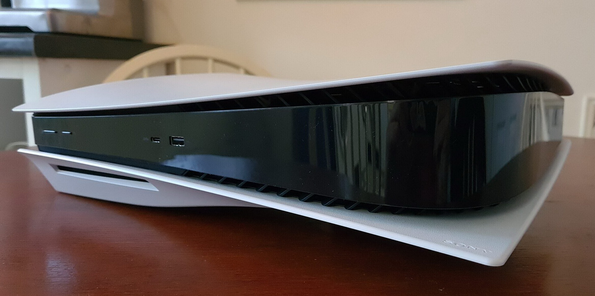

Гра́льна консо́ль (або гра́льна приста́вка, ігрова́ консо́ль, ігрова́ приста́вка) — це спеціалізований електронний пристрій, розроблений і створений для того, щоб грати у відеоігри. Найчастіше пристроєм виводу є телевізор або, рідше, комп'ютерний монітор.
